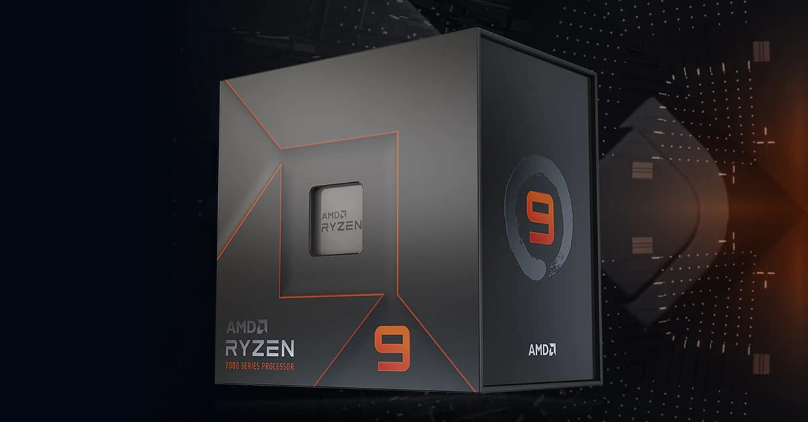
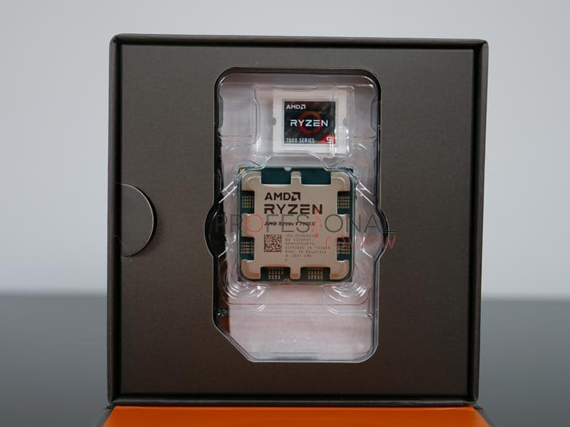
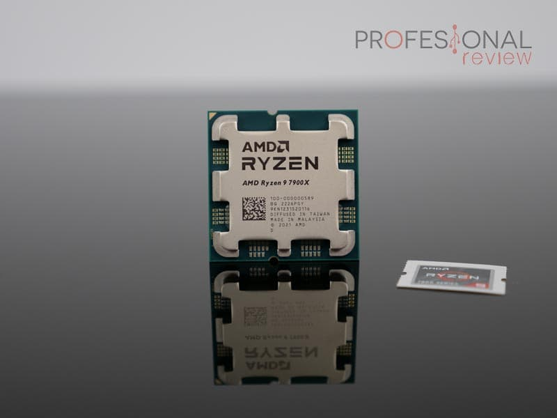

Llevá tu PC gaming al siguiente nivel con este Ryzen 9 7900X: Es una verdadera bestia
Probamos este modelo con 12 nucleos y 24 hilos
Tercera CPU Zen 4 que probamos, y esta vez se trata del AMD Ryzen 9 7900X, un modelo a medio camino entre el 7950X y el 7700X con 12 núcleos y 24 hilos. Sigue siendo una CPU enfocada en el mundo de creación de contenido y tareas de renderizado por su enorme capacidad de procesamiento. A su vez, las elevadas frecuencias y el extra de una buena placa base le harán alcanzar un buen rendimiento en juegos. Veremos qué tal se comporta este procesador y dónde se queda respecto a su hermano mayor y el 12900K de Intel.
Unboxing
El AMD Ryzen 9 7900X utiliza la misma presentación que el modelo superior consistiendo en una caja de cartón duro cuadrada y de mejor calidad que los modelos Ryzen 7 hacia abajo. En ella podemos ver la nueva skin con más presencia del color gris y una ventana superior a través de la cual se muestra la CPU.
Una vez más vendrá dentro de un blíster de plástico semirrígido transparente junto a la pegatina identificativa. El resto del espacio de la caja se rellena con un bloque de espuma de polietileno de gran densidad a modo de protección, ya que ninguna de las CPU de nueva generación vendrá con solución térmica.
Diseño exterior
Este procesador AMD Ryzen 9 7900X desactiva 4 núcleos respecto del 7950X para ajustar su precio y al mismo tiempo brindar un alto rendimiento en multitarea y aplicaciones que requieran una gran capacidad de procesamiento, por ejemplo diseño gráfico, edición de vídeo o gran volumen de tareas. Por ello su enfoque no está puramente en gaming, pues aún los modelos AMD de 8 núcleos se comportan mejor en este campo, aún sin superar a Intel en este segmento. ¿AMD responderá a Raptor Lake con 3D V-Caché pronto? Eso esperamos.
El AMD Ryzen 9 7900X está basado en un proceso de fabricación de 5nm FinFET llevado a cabo por TSMC al cual se le denomina Zen 4 Raphael, aunque es bien sabido que en la práctica, los transistores tienen una litografía de mayor tamaño. Veremos más adelante que no solo la CPU, sino también el cIOD se ha renovado al adoptar transistores de 6 nm añadiendo GPU, más carriles y actualizar su generación.
CPU
Centrándonos en la CPU, tenemos la habitual arquitectura basada en chiplets encontrando dos dados o CCD, con un CCX en cada uno provistos de 8 núcleos. En esta unidad tendremos activos un total de 12 núcleos (6 por CCX) haciendo un total de 24 hilos de procesamiento con tecnología Simultaneous Multithreading (SMT). La disminución de litografía permite consumir menos energía, y en consecuencia se han podido aumentar las frecuencias hasta un boost de 5,6 GHz para esta unidad (ráfaga en dos núcleos), partiendo de una frecuencia base bastante elevada de 4,7 GHz. La frecuencia a la que opera la CPU en todos los núcleos de stock será de 5,2 GHz, igual que otros modelos Zen 4.
Conlusión
Definiendo el tema, el nuevo RYZEN, cumple y supera expectativas, siendo un producto de calidad superior que sirve para dar batalla a sus competidores más cercanos y una opción un poco más económica para aquél que anda buscando dar un paso adelante en tema optimización-calidad-precio.